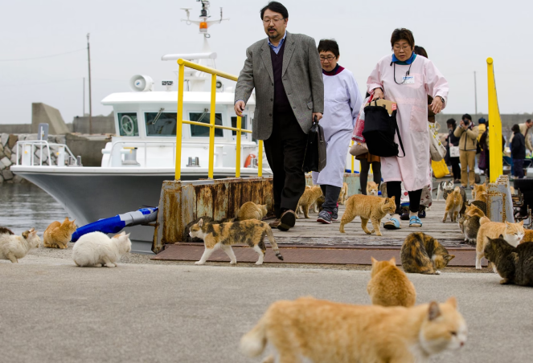

2023迎「貓年」！貓奴必訪的4個日本「療癒系貓城小鎮」
文章轉載：旅奇傳媒
【旅奇傳媒/記者-徐意雯】
2023年為兔年，不過在越南卻是貓咪代替兔子成為十二生肖中的一員，因此今年其實也是貓年喔！日本從10多年前開始的貓咪熱潮引起龐大商機，還有「貓咪經濟學」一說！連帶著許多貓比人多的小島也聲名大噪，吸引許多海內外觀光客前去造訪。
不過，大部分的貓島交通都不甚便利，若專程跑一趟，就要耗上一天的時間，對於出遊時分秒必爭的海外遊客來說，想多玩點跟想吸貓這兩個選擇是否難以取捨呢？其實日本也有許多交通方便的貓城，不用耗去大把交通時間，就能在貓貓的陪伴下盡情暢遊。以下精選4處貓奴必訪的城鎮，在全新的貓年有貓咪加持，運氣肯定加倍！
◆東京‧谷根千◆
谷根千為谷中、根津、千駄木這三區合在一起的愛稱，是充滿昭和懷舊氣息的老城區。文豪夏目漱石的處女作品「我是貓」，也是以此為舞台，在此執筆創作，這一區和貓的緣分之深可見一斑。而最能感受到當地居民對貓的熱愛之處，莫屬谷中銀座商店街了！走在全長不到200公尺的商店街中，不管是路邊的裝飾，、商店的設計甚至到販售的商品，幾乎無處不見貓咪的身影。喜愛貓咪雜貨的朋友，來這裡走一趟絕對大有所獲！

◆神奈川‧江之島◆
江之島上供奉著弁財天等神明，來一趟就可以同時祈求發財、變美、招桃花、無病無災等，因此從江戶時代以來，就是廣受人們喜愛的出遊朝聖之處，一直到現在，都還是東京近郊的熱門觀光景點。不過江之島其實也是著名的貓島，最初是許多人會來此棄貓，但在當地居民的照顧下，貓貓們也過著十分幸福的日子！這裡可以看到貓咪們和大自然、莊嚴寺廟融合的和平風景，不僅心情被療癒，感覺整個身心靈都淨化了啊！
◆廣島‧尾道◆
背山面海的尾道，彷彿從動畫中走出來的濱港小鎮，街道上充滿著濃厚的懷舊氣氛，彷彿迷宮的巷弄中，經常一個轉角就能看見貓咪身影。通往山上的千光寺坡道，被暱稱為「貓之細道」，文藝氣息中帶點可愛，突然出現的貓咪彷彿當地的嚮導，帶著遊客品味這座時光緩慢前行的小城。這裡也是島波海道的起始站，看完貓咪，租上一台單車享受瀨戶內海的風光也非常推薦喔！
◆長崎縣◆
江戶鎖國時期一度唯一的對外貿易港口就是長崎，這裡不僅引進了砂糖、地瓜、基督教等影響日本各方面文化甚鉅的「舶來品」，據說還引進了尾巴造型奇特的麒麟尾貓！根據日本學者調查，擁有麒麟尾基因的貓咪，應該是跟著荷蘭船隻從麒麟尾貓數量居多的印尼一起來到日本後開枝散葉，其中長崎縣的麒麟尾貓咪占比是日本第一，高達79%！你一定想不到，在長崎尾巴又細又長的貓咪，反而比較珍貴呢！現在長崎市的代表性景點眼鏡橋附近，更有座麒麟尾貓神社，不僅能夠參拜、抽籤之外，還有許多原創等貓咪雜貨。來到長崎，除了必吃的長崎蛋糕以及各種充滿異國風情的街景、文化，在貓咪的點綴之下，更別有一番風情！